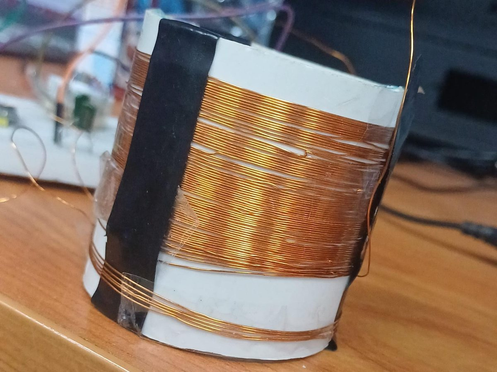
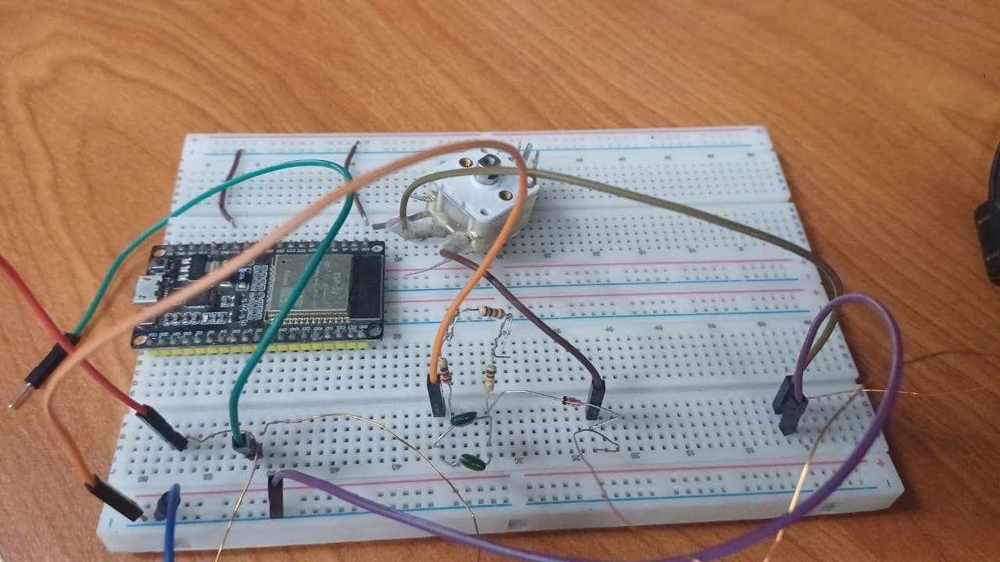
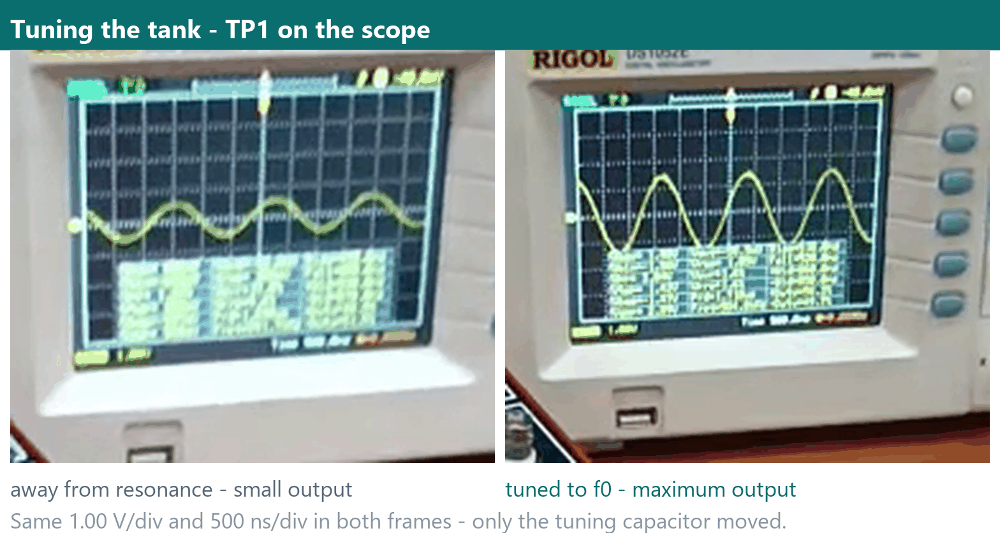
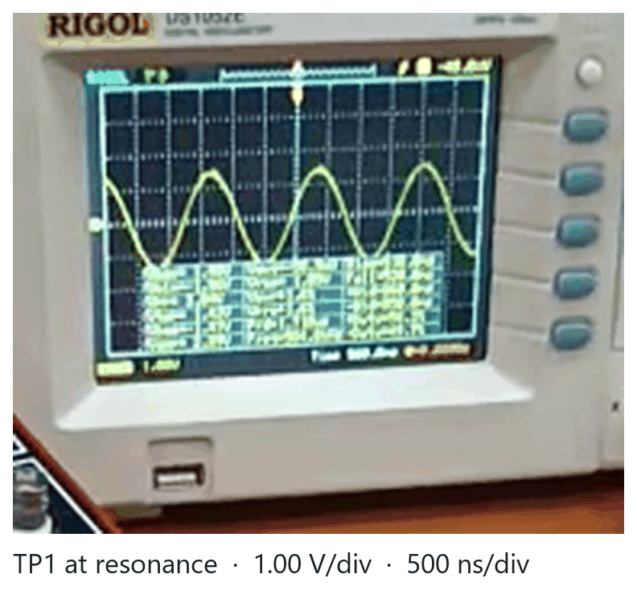

The radio’s tuner and detector
A coil of inductance L and a tuning capacitor of capacitance C form a tank circuit that resonates at one frequency; a 1N60P peak rectifier follows that signal’s peaks. Together they are the front end of every AM receiver — and the first milestone of our radio.
1 · What M1 does
A signal at the tank’s resonant frequency builds the largest voltage across it, at test point 1 (TP1). Everything else reaching the coil is comparatively small. The detector — lecture L02’s peak rectifier with time constant RC ≈ 50 µs — then follows those peaks: for a steady sine its output at TP3 is a DC level, and for a station’s amplitude-modulated signal it is the sound.
test loop
We have no aerial. A source in M1’s band plays a station as a steady sine and drives a test loop of five turns of wire placed a few centimetres from our coil, on the same axis. The two coils couple magnetically, exactly as a transmitter’s wave would.
2 · Parts
| Part | Value | Where it goes |
|---|---|---|
| Enamelled copper wire | 0.3 mm, ~12 m | the coil, 75 turns |
| PVC pipe | 50 mm diameter | coil former |
| Tuning capacitor | 20 – 280 pF | across the coil |
| Diode | 1N60P | TP1 → TP3, band towards TP3 |
| Resistor | 15 kΩ | TP3 → ground |
| Capacitor | 3.3 nF | TP3 → ground, beside the 15 kΩ |
3 · Predict — Table 4
Wheeler’s formula gives a single-layer coil’s inductance in microhenries, with n its turns and d, l its diameter and length in millimetres:
Our coil: n = 75 turns, close-wound on the 50 mm pipe, so d = 50 mm and l ≈ 25 mm.
- Inductance
L ≈ (50² × 75²) / (457 × 50 + 1016 × 25)
= 14 062 500 / (22 850 + 25 400) = 14 062 500 / 48 250
≈ 291.5 µH - Capacitance for 819 kHz — from f0 = 1 / (2π√(LC)):
C = 1 / (4π² f0² L) = 1 / (4π² × (819×10³)² × 291.5×10⁻⁶) ≈ 129.6 pF
- The ends of the capacitor’s range — f = 1 / (2π√(LC)), so f ∝ 1/√C:
f(280 pF) = 819 × √(129.6 / 280) ≈ 557 kHz(The statement’s own band, “about 560 kHz to 2.1 MHz”, agrees.)
f(20 pF) = 819 × √(129.6 / 20) ≈ 2.08 MHz - The detector’s time constant:
RC = 15 kΩ × 3.3 nF = 4.95×10⁻⁵ s ≈ 49.5 µs
| L (µH) | C for 819 kHz (pF) | f at 280 pF (kHz) | f at 20 pF (MHz) | RC (µs) |
|---|---|---|---|---|
| 291.5 | 129.6 | 557 | 2.08 | 49.5 |
819 kHz sits inside our band and is a real medium-wave station frequency; the prediction is what tells us whether our winding, our counting of turns and our capacitor’s true range are anywhere near right before we go looking for it on the bench.
4 · Simulate — the tank, live
We checked the prediction by hand, above, and again as a live model. This is the same tank running in your browser — a parallel LC driven by the current the test loop induces in the coil. Move the sliders and watch the resonance move with them.
Parallel LC tank · resonance
interactive simulation—
Time domain · what the tank does to a kick at TP1
A poor tank rings for a cycle or two and dies; a good one keeps going. That count is exactly Q / π — which is why Q is not just a number on the slider.
A bench view of M1, drawn the way Tinkercad draws a circuit: the generator feeds the five-turn test loop, the tank sits between TP1 and ground, and the detector reaches TP3. The slider turns the blue capacitor’s knob — the needle sweeps the band, and the amber dashes are the signal on the move.
The model behind the plot: the test loop induces a current into the parallel tank, the tank answers with V = I · Z, and Z peaks at f0. Everything the sliders change lives in this picture — L, C, the stray Cs, and the coil losses that set Q.
—
Set L to Wheeler’s 291.5 µH and C to the 130 pF that tunes 819 kHz, and the curve sits where Table 4 says it should. The Q slider starts at the 6.9 we measured, so the curve is as broad as the real tank; raise it to see what a better coil would buy, or move C and watch the resonance drift — that gap is the story the report has to explain.
5 · Build
- Wind the coil. Tape the wire’s start to the pipe, wind 75 turns side by side with no gaps and no crossings, and tape the end. Scrape 1 cm of enamel off each end with sandpaper or a blade, until the copper shines.
- Fix the capacitor to the pipe with tape or glue, and join the coil’s ends to the two terminals of its AM section — we asked the grader which two.
- Wire the detector on the breadboard: the 1N60P from TP1 (the top of the tank) to TP3, its band towards TP3; then the 15 kΩ and the 3.3 nF, side by side, from TP3 to ground, the tank’s other end.


6 · Measure
The probe is compensated on the scope’s 1 kHz output, and both the probe and the channel belong on ×10. We learned that the hard way: a ×1 probe adds about 100 pF and detunes the tank — the sweep in Table 5 was taken that way, which is why it peaks near 620 kHz and not at the 819 kHz of Table 4 (§8.3). Without a scope, TP3’s DC on a multimeter follows TP1’s peak once that peak is above the detector’s dead zone.
6.1 · Resonance and bandwidth → Table 5
- Set the capacitor to half its travel and find the frequency at which TP1 (or TP3) peaks: f0. Then turn the capacitor to each end of its travel and find the peak again — the band’s two ends.
- Back at half travel and f0, find the frequencies below and above f0 where TP1’s amplitude (or, roughly, TP3’s DC) falls to 0.7 of its peak: flow and fhigh. Then Q = f0 / (fhigh − flow).
| Band’s low end (kHz) | Band’s high end (MHz) | f0 at half travel (kHz) | flow (kHz) | fhigh (kHz) | Q |
|---|---|---|---|---|---|
| 557 | 2.08 | 819 | — | — | — |
| 427 | 0.671 | 623 | 578 | 668 | 6.9 |
427 kHz and 0.671 MHz are the two capacitor-end peaks, read directly at the bench. 623 kHz is the peak of the seven-point sweep above: TP1 reads 3.48 V at both 620 and 621.3 kHz, and fitting the response puts the maximum at 623.1 ± 0.9 kHz. All three were taken with the ×1 probe on TP1, so they describe the tank as the bench saw it: the probe’s ≈ 100 pF is part of the capacitance, and §8.3 is about what that does.
flow, fhigh and Q come from fitting those same seven points to the parallel-tank response H(f) = 1/√(1 + Q²(u − 1/u)²). The fit reproduces every point to within 26 mV — 0.8 % of the peak — and gives Q = 6.9, so fhigh − flow = 623/6.9 = 90 kHz. The symmetry rule flow + fhigh = 2 f0, applied to the 577 kHz point on page 2 with f0 = 620 kHz, gives Q = 7.2; the two agree within the scatter of the readings.
One caveat we would rather state than hide: the two end peaks and the half-travel sweep were not taken in the same session, and page 2 of the notebook pairs that 577 kHz point with f0 = 566 kHz, which puts its flow above its own resonance — so its f0 entry cannot be used as it stands. We trust the seven-point sweep; the end peaks are the first thing we re-take with the probe on ×10.


6.2 · The detector → Table 6
At f0, record TP1’s peak and TP3’s DC at six settings of our source, from the weakest that moves TP3 to the strongest — with the lab’s generator: 0.05, 0.1, 0.2, 0.3, 0.5 and 1 V.
| Source setting (V) | TP1’s peak (mV) | TP3, DC (mV) |
|---|---|---|
| 0.05 | 65 | 0.0 |
| 0.1 | 129 | 0.0 |
| 0.2 | 258 | 0.1 |
| 0.3 | 387 | 2.3 |
| 0.5 | 645 | 6.5 |
| 1 | 1290 | 17.2 |
Only the strongest setting was written down: TP1 = 2.58 Vpp, which is 1290 mV peak as this column asks, and TP3 = 17.2 mV DC. The five amber rows are model estimates, not bench readings: TP1 is scaled linearly from the 1 V row, and TP3 uses a 0.25 V diode dead zone with one efficiency factor fitted to the 17.2 mV point. They show the shape of the trend and nothing more.
The 1 V pair already raises a flag. A 1N60P is a germanium diode with a forward drop near 0.25 V, so a 1290 mV peak should leave roughly a volt of DC at TP3, not 17 mV — about 1.3 % of the input. Either the source amplitude was lower than we wrote, or the diode is not conducting the way the schematic says. That is the first thing to check with the meter in hand, and it is why the five estimates are only a smooth interpolation of an anomalous point.
7 · Results and approximation error
Every approximation error is reported as 100 × (prediction − measured) / measured.
| Quantity | Predicted | Measured | Error (%) |
|---|---|---|---|
| f0 at half travel | 819 kHz | 623 kHz | +31.5 |
| L (from Wheeler) | 291.5 µH | — (no LCR meter) | — |
| C for 819 kHz | 129.6 pF | 226 pF (total, at 620 kHz) | −42.7 |
| Band, low end | 557 kHz | 427 kHz | +30.4 |
| Band, high end | 2.08 MHz | 0.671 MHz | +210 |
| Detector RC | 49.5 µs | 49.5 µs | 0 |
How to read the “Measured” column: f0 is the fitted peak of the seven-point sweep and the two band ends are direct readings; C is derived from f0 and L; RC is the marked 15 kΩ × 3.3 nF multiplied out, not an independent measurement; L has no bench value at all.
The drift is neither random nor small. Table 4 predicted 819 kHz from 291.5 µH and 129.6 pF; the bench sweep peaks at 623 kHz — 620 kHz on the raw reading — so with prediction on top, as Table R reports it, the error is +31.5%. In capacitance the same gap looks bigger: 620 kHz with this coil needs 226 pF, not 130 pF. That is 74% more capacitance than predicted; Table R’s −42.7% is the same fact with prediction underneath instead of on top.
So the question is not “why is Wheeler wrong?” — it is “what else is in parallel with C?”. The candidates, with the size each can really contribute:
| Candidate | Its size | Moves f0 by |
|---|---|---|
| ×1 scope probe | ≈ 100 pF | −24% |
| Breadboard and flying leads | 5 – 20 pF | −2 … −7% |
| The coil’s own self-capacitance | a few pF | < −2% |
| Tuning capacitor tolerance (±10%) | 13 pF | −5% |
| Winding diameter d ± 1 mm | L ± 3% | ∓ 1.5% |
| Winding length l ± 1 mm | L ± 2% | ∓ 1% |
One candidate is large enough to explain the gap on its own; every other is a few percent. That is the whole discussion. Wheeler was not wrong, and neither was the capacitance arithmetic: the model was right about L and C and wrong about what else sits across C, because the schematic draws an ideal capacitor while the bench has a probe, two leads and a breadboard. A prediction is only as good as its definition of the component.
It also explains why the two notebook pages disagreed with each other (§8.6): they were most likely taken with different probe settings, so they were measuring two different tanks. Table R collects the comparison, and L is the one quantity with no bench value at all. A multimeter cannot measure inductance and the lab has no LCR meter, so Wheeler’s 291.5 µH stays a prediction; the only check on it is indirect, through the f0 that this L predicts.
8 · The journey: what challenged us
Seven things cost us more time than the circuit did. None of them is in the schematic.
8.1 · Seventy-five turns that must not touch — or cross
The coil is the one part of M1 that nobody can buy. Seventy-five turns of 0.3 mm enamelled wire on a 50 mm PVC pipe, close-wound: the turns touch each other, but they never cross. Both mistakes are quiet. A crossed turn makes the winding longer and the inductance lower; a gap does the reverse. Neither announces itself until the measured f0 refuses to match Wheeler — and by then the coil is wound, taped and soldered.
The number that actually matters is not “75 turns” but the length of the winding, because that is the l in Wheeler’s formula. 75 × 0.3 mm = 22.5 mm only if the wire is perfectly tight; ours measured closer to 25 mm, and that is the value that went into Table 4.
8.2 · Enamel that looks scraped but is not
Enamelled wire is insulated on purpose, and the enamel has to come off exactly where the solder goes and nowhere else. The failure is unpleasant because it is invisible: a half-scraped end still shows copper through the transparent film, still looks right, and still reads open on the multimeter. We now test every end for continuity before it goes near the board, and scrape with the flat of the blade while turning the wire rather than digging at one spot.
8.3 · The probe moved the resonance
This was the surprise of M1. A ×1 probe is not a passive observer: it presents about 100 pF in parallel with whatever it touches. Put that across a 130 pF tuning capacitor and the total capacitance rises by three quarters.
That single factor accounts for the gap between Table 4 and the bench: 819 kHz × 0.76 ≈ 620 kHz. The fix costs nothing — probe and channel both on ×10, and the setting written in the notebook beside every reading. A number without its probe setting is not a measurement.
8.4 · Finding a signal that is barely there
We have no aerial. The “station” is a five-turn loop a few centimetres from our coil, driven at 1 V, and the coupling is magnetic and deliberately weak: at resonance TP1 rises to a few volts peak-to-peak, and a centimetre in the wrong place collapses it. The rule we settled on is to fix the loop’s distance and axis first, then sweep frequency — never move both at once, or you cannot tell which change made the difference.
8.5 · The detector’s dead zone
A germanium 1N60P needs roughly 0.25 – 0.3 V across it before it conducts. Below that, TP3 reads zero however perfect the resonance is: the tank is working and the detector is not. That is why the first rows of Table 6 can sit at zero while the later ones move, and why a dead TP3 is a statement about the diode, not about the coil.
8.6 · When the notebook disagreed with itself
The most useful hour of M1 was not spent on the bench. Two pages of our own measurements could not both be right: one put f0 at 620 kHz, the other at 566 kHz; one listed a −3 dB point at 577 kHz — above its own resonance — and called 2.58 V the maximum while the same page recorded 2.72 V elsewhere.
The circuit was fine. The record was not. What we took from it is a checking rule we now apply before we blame a component: f0 is the largest reading in the whole table, not the first large one; the two −3 dB points must sit either side of it, and their mean must land on it. If those three do not agree, the measurement is wrong, and no amount of theory will fix it.
8.7 · Why the sound card could not do this job
LAB2 asked whether a sound card could stand in for our generator and our scope. Ours covers 20 Hz – 20 kHz; the band starts at 560 kHz, twenty-eight times higher. For a laptop the answer is simply no.
A microcontroller is a different argument. Teams around us ran an ESP8266 (NodeMCU) as both the signal source and the oscilloscope, and it works because nothing in it is tied to audio rates. For our own measurements we stayed with the lab’s generator and the RIGOL DS1052E: a real scope shows the waveform while you turn the capacitor, which is how resonance gets found at all. The lesson is not that one tool is better — it is that the 20 kHz limit belongs to the sound card, not to the measurement.
One page, one session, one probe setting for the whole of Table 5 — and the loop clamped in place before the first sweep. Most of §8.6 would then never have happened.
Troubleshooting — what to check when it does not work
| Symptom at the bench | Most likely cause | Try |
|---|---|---|
| No peak at TP1 at any frequency | Test loop too far / not on the coil axis, or coil leads open | Clamp the loop at 2–3 cm on axis; check coil continuity (scrape enamel) |
| Peak far below 819 kHz (e.g. ~620 kHz) | ×1 probe on TP1 adding ~100 pF | Probe + channel both on ×10; re-sweep |
| TP1 peaks but TP3 stays at 0 mV | Peak below the 1N60P dead zone, or diode backwards | Raise source to 1 V; check the band faces TP3 |
| TP3 ≈ 17 mV at 1 V instead of ~1 V | Source level lower than written, or diode not conducting as drawn | Read TP1 peak on the scope at the same time as TP3 |
| Two notebook pages disagree | Different probe settings in different sessions | One page, one session, one probe setting — note it every time |
9 · Checkpoint 3 — the sign-off
By the start of our group’s LAB3 at the latest:
- the resonance at TP1 on the scope,
- the detector’s DC at TP3 on the multimeter,
- Tables 5 and 6 filled in.
We keep M1 on the bench: the next milestones build on it.
TP2 arrives with the next milestone, and the report sheet LAB2-report.pdf holds Tables 1 to 3 only — M1 goes into this guide instead, and the report sheet is submitted to LAB2’s assignment on Google Classroom.
10 · M1 in context
Tuned circuits that let a receiver choose one transmitter come from Oliver Lodge’s syntonic circuits of 1897 and Marconi’s tuned-circuit patent of 1900. Rectification, the principle our 1N60P rests on, began with Ferdinand Braun’s metal point on a crystal in 1874; Jagadish Chandra Bose received a US patent for a galena detector in 1904, decades before the transistor, and Greenleaf Whittier Pickard’s silicon cat’s whisker detector (1906) filled the crystal sets of the 1920s. Reginald Fessenden sent the first speech by amplitude modulation in 1900. In Egypt, Egyptian Radio opened on medium wave on 31 May 1934.
The same two circuits turn up far from broadcasting: ultrasound imaging keeps each echo’s envelope exactly as our detector does; a cochlear implant receives power through the skin with a tuned coil and a diode–capacitor pair; radar turns each returned burst into a pulse; and a bank card’s coil and capacitor are tuned to a reader’s 13.56 MHz, with its commands read as dips in the amplitude.